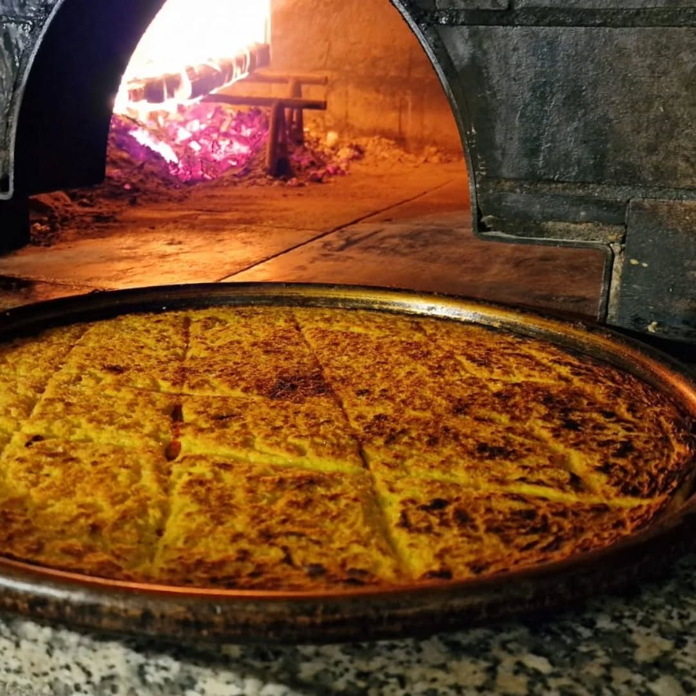
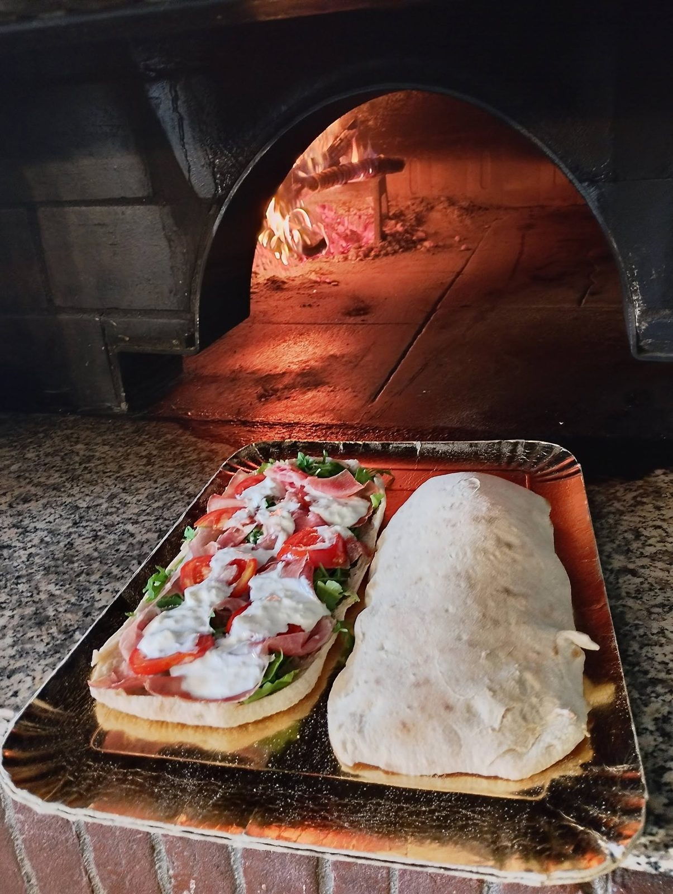
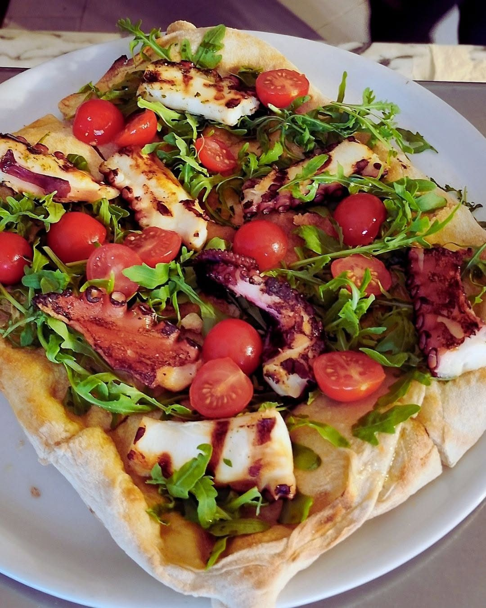
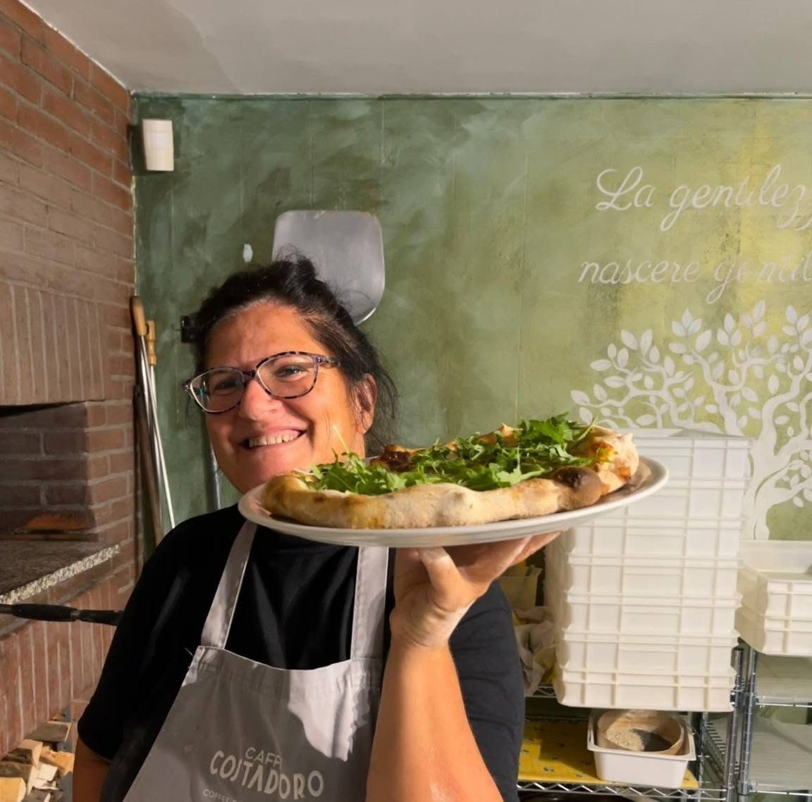
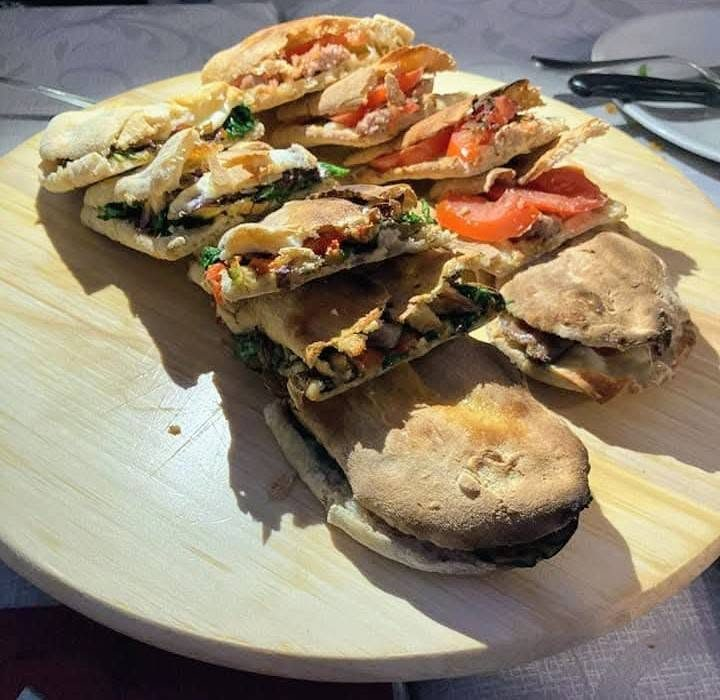
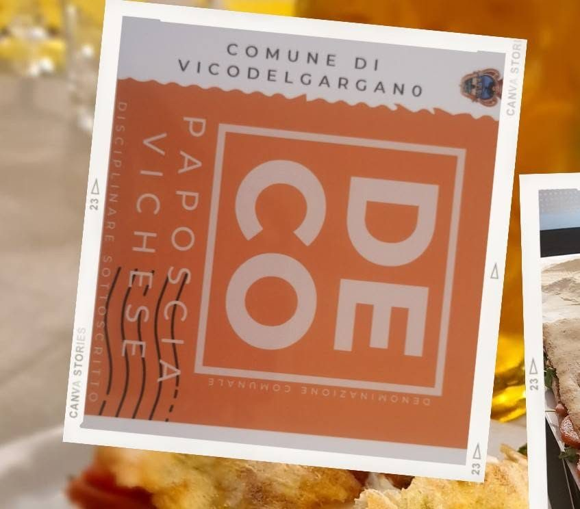
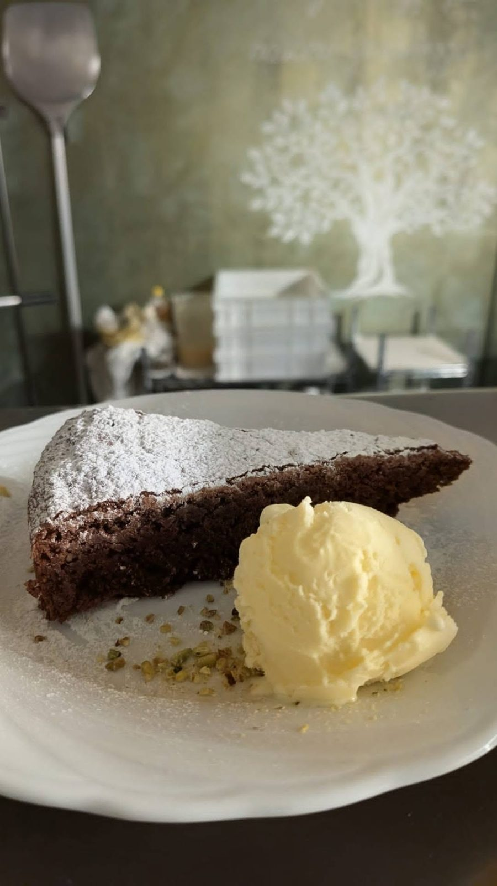
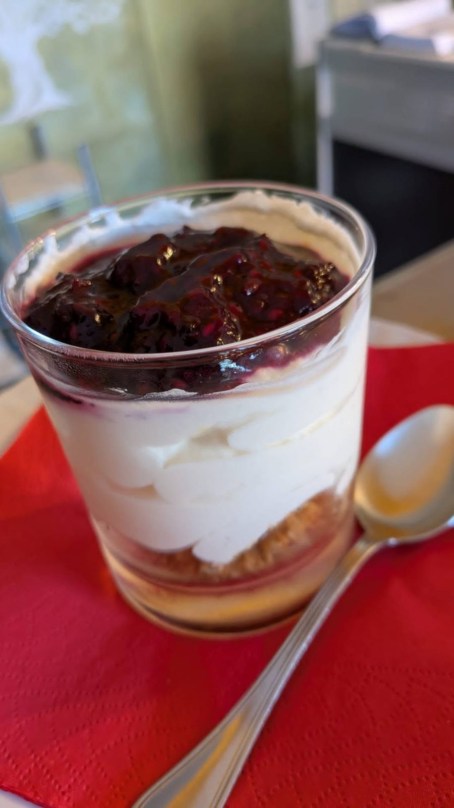
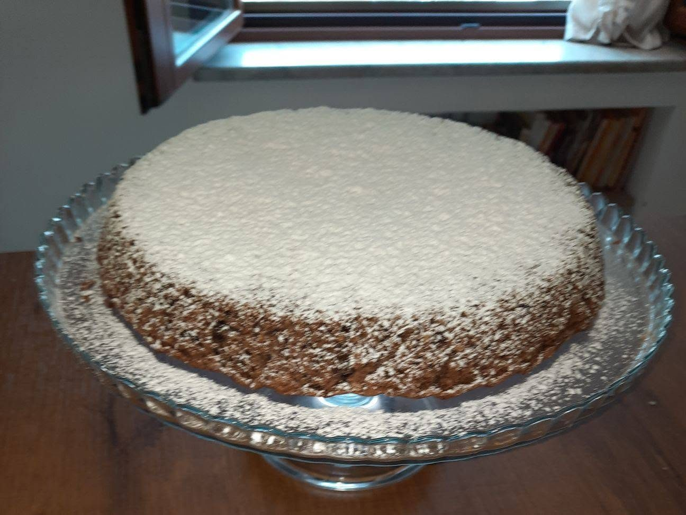
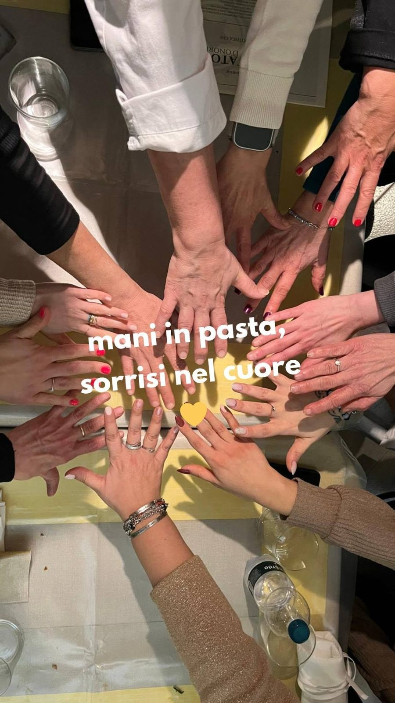

Farinata di Pegli
Classica o farcita: con cipolla, gorgonzola, verdure con mozzarella, speck e brie.
Una porzione è per due personePizzeria a Collegno · Corso Francia 231
Lievitazione naturale di 48 o 72 ore, farine non raffinate macinate a pietra. E due specialità che non trovi ovunque: la farinata di Pegli e la paposcia del Gargano.
Martedì – domenica 19:00 – 23:30Lunedì chiusoAl tavolo, da asporto e a domicilio

Il nostro impasto
Tra tradizione e innovazione: la pizza si fa con calma, con farine non raffinate e con il fuoco vero.
Farine non raffinate, per un impasto dal sapore pieno.
Lievitazione naturale: l'impasto matura 48 o 72 ore prima di essere steso.
Ogni pizza cuoce nel forno a legna.

Impasti alternativi
Tutti con farine non raffinate. Dillo quando prenoti o ordini. Nel menù trovi anche proposte vegetariane e vegane.

Ristorante Pizzeria Jonica
A Collegno, in Corso Francia, tra tradizione e innovazione. Mani in pasta e forno acceso ogni sera, dal martedì alla domenica.
Nel menù c'è perfino una sezione tutta sua:
«Le divagazioni della pizzaiola»
Specialità della casa
Due specialità regionali che alla Jonica sono di casa.

Classica o farcita: con cipolla, gorgonzola, verdure con mozzarella, speck e brie.
Una porzione è per due persone
La specialità tipica di Vico del Gargano, in Puglia.

Paposcia vichese, De.Co. del Comune di Vico del Gargano.
Per finire



Cannoli sicilianiCassata sicilianaParfait di mandorle di SiciliaIl nostro tiramisù

Lady Chef Nip
Per amatori e per professionisti. Date e dettagli al telefono o su WhatsApp.
Chiedi le prossime dateLe serate
Serate con un menù di impasti diversi. Per sapere quando sarà la prossima, chiamaci o scrivici.
ChiamaContatti